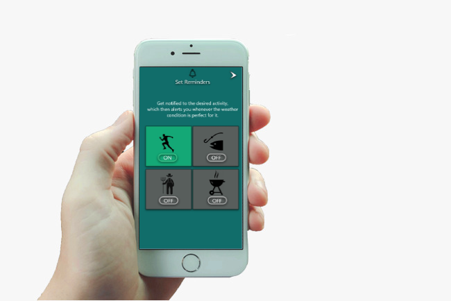

Halfway through the first semester, and so far its pretty much been all about the designing and coding for your website/portfolio. In the third flow, we're looking into working with apps, or more specificly designing a layout and functionality of an app.
We're tasked to design a prototype version on a phone app, with 3 different themes to choose from. Those themes included: Weather-app, Real estate seeking app, or sports-tracking app. I ended up going for the weather theme for my prototype, as i had an idea to make it a bit original in sense of adding additional features, than what a weather app normally would.
You can check the finished versions for phone here, and tablets here.
The main feature added to the weather app, is the "reminders" section.
By choosing one of the 4 available options, the app will notify you with the best possible weather condition suited for the activity chosen.
This project, can always be improved on.
What it lacked in my opinion, was setting "faces" for my personas. Finding out who would need my product.
So adding some form of questions/setup, before the features of the app can be used. And i tought of adding a gamification element to it, so that the user would get motivated to add their interests, while also enjoying its features in the process.